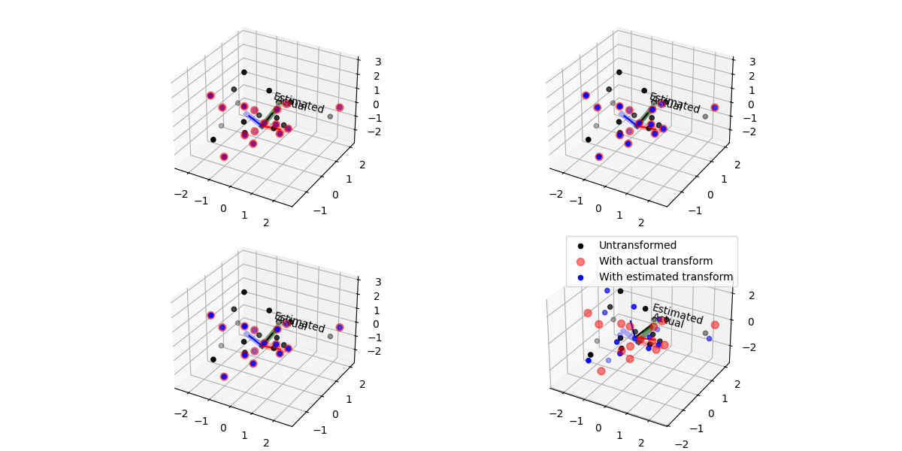

Note
Go to the end to download the full example code.
Match Pointclouds#
it=0, e=10.451, jnp.linalg.norm(grad)=1.631
it=1, e=10.438, jnp.linalg.norm(grad)=1.633
it=2, e=10.424, jnp.linalg.norm(grad)=1.634
it=3, e=10.411, jnp.linalg.norm(grad)=1.635
it=4, e=10.398, jnp.linalg.norm(grad)=1.637
it=5, e=10.384, jnp.linalg.norm(grad)=1.638
it=6, e=10.371, jnp.linalg.norm(grad)=1.640
it=7, e=10.357, jnp.linalg.norm(grad)=1.641
it=8, e=10.344, jnp.linalg.norm(grad)=1.642
it=9, e=10.330, jnp.linalg.norm(grad)=1.644
it=10, e=10.317, jnp.linalg.norm(grad)=1.645
it=11, e=10.303, jnp.linalg.norm(grad)=1.647
it=12, e=10.290, jnp.linalg.norm(grad)=1.648
it=13, e=10.276, jnp.linalg.norm(grad)=1.649
it=14, e=10.263, jnp.linalg.norm(grad)=1.651
it=15, e=10.249, jnp.linalg.norm(grad)=1.652
it=16, e=10.235, jnp.linalg.norm(grad)=1.654
it=17, e=10.222, jnp.linalg.norm(grad)=1.655
it=18, e=10.208, jnp.linalg.norm(grad)=1.656
it=19, e=10.194, jnp.linalg.norm(grad)=1.658
it=20, e=10.180, jnp.linalg.norm(grad)=1.659
it=21, e=10.167, jnp.linalg.norm(grad)=1.660
it=22, e=10.153, jnp.linalg.norm(grad)=1.662
it=23, e=10.139, jnp.linalg.norm(grad)=1.663
it=24, e=10.125, jnp.linalg.norm(grad)=1.665
it=25, e=10.111, jnp.linalg.norm(grad)=1.666
it=26, e=10.097, jnp.linalg.norm(grad)=1.667
it=27, e=10.083, jnp.linalg.norm(grad)=1.669
it=28, e=10.070, jnp.linalg.norm(grad)=1.670
it=29, e=10.056, jnp.linalg.norm(grad)=1.672
it=30, e=10.042, jnp.linalg.norm(grad)=1.673
it=31, e=10.028, jnp.linalg.norm(grad)=1.674
it=32, e=10.014, jnp.linalg.norm(grad)=1.676
it=33, e=9.999, jnp.linalg.norm(grad)=1.677
it=34, e=9.985, jnp.linalg.norm(grad)=1.679
it=35, e=9.971, jnp.linalg.norm(grad)=1.680
it=36, e=9.957, jnp.linalg.norm(grad)=1.681
it=37, e=9.943, jnp.linalg.norm(grad)=1.683
it=38, e=9.929, jnp.linalg.norm(grad)=1.684
it=39, e=9.915, jnp.linalg.norm(grad)=1.686
it=40, e=9.900, jnp.linalg.norm(grad)=1.687
it=41, e=9.886, jnp.linalg.norm(grad)=1.688
it=42, e=9.872, jnp.linalg.norm(grad)=1.690
it=43, e=9.858, jnp.linalg.norm(grad)=1.691
it=44, e=9.843, jnp.linalg.norm(grad)=1.692
it=45, e=9.829, jnp.linalg.norm(grad)=1.694
it=46, e=9.815, jnp.linalg.norm(grad)=1.695
it=47, e=9.800, jnp.linalg.norm(grad)=1.697
it=48, e=9.786, jnp.linalg.norm(grad)=1.698
it=49, e=9.771, jnp.linalg.norm(grad)=1.699
it=50, e=9.757, jnp.linalg.norm(grad)=1.701
it=51, e=9.743, jnp.linalg.norm(grad)=1.702
it=52, e=9.728, jnp.linalg.norm(grad)=1.703
it=53, e=9.714, jnp.linalg.norm(grad)=1.705
it=54, e=9.699, jnp.linalg.norm(grad)=1.706
it=55, e=9.684, jnp.linalg.norm(grad)=1.707
it=56, e=9.670, jnp.linalg.norm(grad)=1.709
it=57, e=9.655, jnp.linalg.norm(grad)=1.710
it=58, e=9.641, jnp.linalg.norm(grad)=1.711
it=59, e=9.626, jnp.linalg.norm(grad)=1.712
it=60, e=9.611, jnp.linalg.norm(grad)=1.714
it=61, e=9.597, jnp.linalg.norm(grad)=1.715
it=62, e=9.582, jnp.linalg.norm(grad)=1.716
it=63, e=9.567, jnp.linalg.norm(grad)=1.717
it=64, e=9.552, jnp.linalg.norm(grad)=1.719
it=65, e=9.538, jnp.linalg.norm(grad)=1.720
it=66, e=9.523, jnp.linalg.norm(grad)=1.721
it=67, e=9.508, jnp.linalg.norm(grad)=1.722
it=68, e=9.493, jnp.linalg.norm(grad)=1.724
it=69, e=9.478, jnp.linalg.norm(grad)=1.725
it=70, e=9.463, jnp.linalg.norm(grad)=1.726
it=71, e=9.448, jnp.linalg.norm(grad)=1.727
it=72, e=9.434, jnp.linalg.norm(grad)=1.728
it=73, e=9.419, jnp.linalg.norm(grad)=1.730
it=74, e=9.404, jnp.linalg.norm(grad)=1.731
it=75, e=9.389, jnp.linalg.norm(grad)=1.732
it=76, e=9.374, jnp.linalg.norm(grad)=1.733
it=77, e=9.359, jnp.linalg.norm(grad)=1.734
it=78, e=9.344, jnp.linalg.norm(grad)=1.735
it=79, e=9.328, jnp.linalg.norm(grad)=1.737
it=80, e=9.313, jnp.linalg.norm(grad)=1.738
it=81, e=9.298, jnp.linalg.norm(grad)=1.739
it=82, e=9.283, jnp.linalg.norm(grad)=1.740
it=83, e=9.268, jnp.linalg.norm(grad)=1.741
it=84, e=9.253, jnp.linalg.norm(grad)=1.742
it=85, e=9.238, jnp.linalg.norm(grad)=1.743
it=86, e=9.222, jnp.linalg.norm(grad)=1.744
it=87, e=9.207, jnp.linalg.norm(grad)=1.745
it=88, e=9.192, jnp.linalg.norm(grad)=1.746
it=89, e=9.177, jnp.linalg.norm(grad)=1.747
it=90, e=9.161, jnp.linalg.norm(grad)=1.748
it=91, e=9.146, jnp.linalg.norm(grad)=1.749
it=92, e=9.131, jnp.linalg.norm(grad)=1.750
it=93, e=9.116, jnp.linalg.norm(grad)=1.751
it=94, e=9.100, jnp.linalg.norm(grad)=1.752
it=95, e=9.085, jnp.linalg.norm(grad)=1.753
it=96, e=9.069, jnp.linalg.norm(grad)=1.754
it=97, e=9.054, jnp.linalg.norm(grad)=1.755
it=98, e=9.039, jnp.linalg.norm(grad)=1.756
it=99, e=9.023, jnp.linalg.norm(grad)=1.757
it=100, e=9.008, jnp.linalg.norm(grad)=1.757
it=101, e=8.992, jnp.linalg.norm(grad)=1.758
it=102, e=8.977, jnp.linalg.norm(grad)=1.759
it=103, e=8.961, jnp.linalg.norm(grad)=1.760
it=104, e=8.946, jnp.linalg.norm(grad)=1.761
it=105, e=8.930, jnp.linalg.norm(grad)=1.762
it=106, e=8.915, jnp.linalg.norm(grad)=1.762
it=107, e=8.899, jnp.linalg.norm(grad)=1.763
it=108, e=8.884, jnp.linalg.norm(grad)=1.764
it=109, e=8.868, jnp.linalg.norm(grad)=1.765
it=110, e=8.853, jnp.linalg.norm(grad)=1.765
it=111, e=8.837, jnp.linalg.norm(grad)=1.766
it=112, e=8.821, jnp.linalg.norm(grad)=1.767
it=113, e=8.806, jnp.linalg.norm(grad)=1.768
it=114, e=8.790, jnp.linalg.norm(grad)=1.769
it=115, e=8.775, jnp.linalg.norm(grad)=1.769
it=116, e=8.759, jnp.linalg.norm(grad)=1.770
it=117, e=8.743, jnp.linalg.norm(grad)=1.771
it=118, e=8.727, jnp.linalg.norm(grad)=1.772
it=119, e=8.712, jnp.linalg.norm(grad)=1.772
it=120, e=8.696, jnp.linalg.norm(grad)=1.773
it=121, e=8.680, jnp.linalg.norm(grad)=1.774
it=122, e=8.665, jnp.linalg.norm(grad)=1.775
it=123, e=8.649, jnp.linalg.norm(grad)=1.776
it=124, e=8.633, jnp.linalg.norm(grad)=1.776
it=125, e=8.617, jnp.linalg.norm(grad)=1.777
it=126, e=8.601, jnp.linalg.norm(grad)=1.778
it=127, e=8.586, jnp.linalg.norm(grad)=1.779
it=128, e=8.570, jnp.linalg.norm(grad)=1.780
it=129, e=8.554, jnp.linalg.norm(grad)=1.781
it=130, e=8.538, jnp.linalg.norm(grad)=1.782
it=131, e=8.522, jnp.linalg.norm(grad)=1.783
it=132, e=8.506, jnp.linalg.norm(grad)=1.784
it=133, e=8.490, jnp.linalg.norm(grad)=1.785
it=134, e=8.474, jnp.linalg.norm(grad)=1.786
it=135, e=8.458, jnp.linalg.norm(grad)=1.787
it=136, e=8.443, jnp.linalg.norm(grad)=1.788
it=137, e=8.427, jnp.linalg.norm(grad)=1.789
it=138, e=8.410, jnp.linalg.norm(grad)=1.790
it=139, e=8.394, jnp.linalg.norm(grad)=1.792
it=140, e=8.378, jnp.linalg.norm(grad)=1.793
it=141, e=8.362, jnp.linalg.norm(grad)=1.794
it=142, e=8.346, jnp.linalg.norm(grad)=1.795
it=143, e=8.330, jnp.linalg.norm(grad)=1.796
it=144, e=8.314, jnp.linalg.norm(grad)=1.798
it=145, e=8.298, jnp.linalg.norm(grad)=1.799
it=146, e=8.282, jnp.linalg.norm(grad)=1.800
it=147, e=8.265, jnp.linalg.norm(grad)=1.802
it=148, e=8.249, jnp.linalg.norm(grad)=1.803
it=149, e=8.233, jnp.linalg.norm(grad)=1.804
it=150, e=8.217, jnp.linalg.norm(grad)=1.806
it=151, e=8.200, jnp.linalg.norm(grad)=1.807
it=152, e=8.184, jnp.linalg.norm(grad)=1.809
it=153, e=8.168, jnp.linalg.norm(grad)=1.810
it=154, e=8.151, jnp.linalg.norm(grad)=1.812
it=155, e=8.135, jnp.linalg.norm(grad)=1.813
it=156, e=8.118, jnp.linalg.norm(grad)=1.814
it=157, e=8.102, jnp.linalg.norm(grad)=1.816
it=158, e=8.085, jnp.linalg.norm(grad)=1.817
it=159, e=8.069, jnp.linalg.norm(grad)=1.819
it=160, e=8.052, jnp.linalg.norm(grad)=1.821
it=161, e=8.036, jnp.linalg.norm(grad)=1.822
it=162, e=8.019, jnp.linalg.norm(grad)=1.824
it=163, e=8.002, jnp.linalg.norm(grad)=1.825
it=164, e=7.986, jnp.linalg.norm(grad)=1.827
it=165, e=7.969, jnp.linalg.norm(grad)=1.828
it=166, e=7.952, jnp.linalg.norm(grad)=1.830
it=167, e=7.935, jnp.linalg.norm(grad)=1.832
it=168, e=7.919, jnp.linalg.norm(grad)=1.833
it=169, e=7.902, jnp.linalg.norm(grad)=1.835
it=170, e=7.885, jnp.linalg.norm(grad)=1.836
it=171, e=7.868, jnp.linalg.norm(grad)=1.838
it=172, e=7.851, jnp.linalg.norm(grad)=1.839
it=173, e=7.834, jnp.linalg.norm(grad)=1.841
it=174, e=7.817, jnp.linalg.norm(grad)=1.843
it=175, e=7.800, jnp.linalg.norm(grad)=1.844
it=176, e=7.783, jnp.linalg.norm(grad)=1.846
it=177, e=7.766, jnp.linalg.norm(grad)=1.847
it=178, e=7.749, jnp.linalg.norm(grad)=1.849
it=179, e=7.732, jnp.linalg.norm(grad)=1.851
it=180, e=7.715, jnp.linalg.norm(grad)=1.852
it=181, e=7.698, jnp.linalg.norm(grad)=1.854
it=182, e=7.681, jnp.linalg.norm(grad)=1.855
it=183, e=7.663, jnp.linalg.norm(grad)=1.857
it=184, e=7.646, jnp.linalg.norm(grad)=1.859
it=185, e=7.629, jnp.linalg.norm(grad)=1.860
it=186, e=7.612, jnp.linalg.norm(grad)=1.862
it=187, e=7.594, jnp.linalg.norm(grad)=1.863
it=188, e=7.577, jnp.linalg.norm(grad)=1.865
it=189, e=7.559, jnp.linalg.norm(grad)=1.866
it=190, e=7.542, jnp.linalg.norm(grad)=1.868
it=191, e=7.525, jnp.linalg.norm(grad)=1.869
it=192, e=7.507, jnp.linalg.norm(grad)=1.871
it=193, e=7.490, jnp.linalg.norm(grad)=1.872
it=194, e=7.472, jnp.linalg.norm(grad)=1.874
it=195, e=7.454, jnp.linalg.norm(grad)=1.875
it=196, e=7.437, jnp.linalg.norm(grad)=1.876
it=197, e=7.419, jnp.linalg.norm(grad)=1.878
it=198, e=7.402, jnp.linalg.norm(grad)=1.879
it=199, e=7.384, jnp.linalg.norm(grad)=1.880
it=200, e=7.366, jnp.linalg.norm(grad)=1.881
it=201, e=7.349, jnp.linalg.norm(grad)=1.882
it=202, e=7.331, jnp.linalg.norm(grad)=1.884
it=203, e=7.313, jnp.linalg.norm(grad)=1.885
it=204, e=7.295, jnp.linalg.norm(grad)=1.885
it=205, e=7.278, jnp.linalg.norm(grad)=1.886
it=206, e=7.260, jnp.linalg.norm(grad)=1.887
it=207, e=7.242, jnp.linalg.norm(grad)=1.888
it=208, e=7.224, jnp.linalg.norm(grad)=1.889
it=209, e=7.206, jnp.linalg.norm(grad)=1.890
it=210, e=7.188, jnp.linalg.norm(grad)=1.891
it=211, e=7.170, jnp.linalg.norm(grad)=1.892
it=212, e=7.153, jnp.linalg.norm(grad)=1.893
it=213, e=7.135, jnp.linalg.norm(grad)=1.894
it=214, e=7.117, jnp.linalg.norm(grad)=1.895
it=215, e=7.099, jnp.linalg.norm(grad)=1.896
it=216, e=7.081, jnp.linalg.norm(grad)=1.897
it=217, e=7.063, jnp.linalg.norm(grad)=1.899
it=218, e=7.045, jnp.linalg.norm(grad)=1.900
it=219, e=7.027, jnp.linalg.norm(grad)=1.902
it=220, e=7.009, jnp.linalg.norm(grad)=1.903
it=221, e=6.990, jnp.linalg.norm(grad)=1.905
it=222, e=6.972, jnp.linalg.norm(grad)=1.906
it=223, e=6.954, jnp.linalg.norm(grad)=1.908
it=224, e=6.936, jnp.linalg.norm(grad)=1.909
it=225, e=6.918, jnp.linalg.norm(grad)=1.911
it=226, e=6.899, jnp.linalg.norm(grad)=1.913
it=227, e=6.881, jnp.linalg.norm(grad)=1.914
it=228, e=6.863, jnp.linalg.norm(grad)=1.916
it=229, e=6.844, jnp.linalg.norm(grad)=1.918
it=230, e=6.826, jnp.linalg.norm(grad)=1.919
it=231, e=6.807, jnp.linalg.norm(grad)=1.921
it=232, e=6.789, jnp.linalg.norm(grad)=1.923
it=233, e=6.771, jnp.linalg.norm(grad)=1.924
it=234, e=6.752, jnp.linalg.norm(grad)=1.926
it=235, e=6.733, jnp.linalg.norm(grad)=1.928
it=236, e=6.715, jnp.linalg.norm(grad)=1.929
it=237, e=6.696, jnp.linalg.norm(grad)=1.931
it=238, e=6.678, jnp.linalg.norm(grad)=1.933
it=239, e=6.659, jnp.linalg.norm(grad)=1.934
it=240, e=6.640, jnp.linalg.norm(grad)=1.936
it=241, e=6.621, jnp.linalg.norm(grad)=1.937
it=242, e=6.603, jnp.linalg.norm(grad)=1.939
it=243, e=6.584, jnp.linalg.norm(grad)=1.941
it=244, e=6.565, jnp.linalg.norm(grad)=1.942
it=245, e=6.546, jnp.linalg.norm(grad)=1.944
it=246, e=6.527, jnp.linalg.norm(grad)=1.946
it=247, e=6.508, jnp.linalg.norm(grad)=1.947
it=248, e=6.489, jnp.linalg.norm(grad)=1.949
it=249, e=6.470, jnp.linalg.norm(grad)=1.951
it=250, e=6.451, jnp.linalg.norm(grad)=1.952
it=251, e=6.432, jnp.linalg.norm(grad)=1.954
it=252, e=6.413, jnp.linalg.norm(grad)=1.955
it=253, e=6.394, jnp.linalg.norm(grad)=1.957
it=254, e=6.375, jnp.linalg.norm(grad)=1.959
it=255, e=6.356, jnp.linalg.norm(grad)=1.960
it=256, e=6.336, jnp.linalg.norm(grad)=1.962
it=257, e=6.317, jnp.linalg.norm(grad)=1.963
it=258, e=6.298, jnp.linalg.norm(grad)=1.965
it=259, e=6.278, jnp.linalg.norm(grad)=1.966
it=260, e=6.259, jnp.linalg.norm(grad)=1.968
it=261, e=6.240, jnp.linalg.norm(grad)=1.969
it=262, e=6.220, jnp.linalg.norm(grad)=1.971
it=263, e=6.201, jnp.linalg.norm(grad)=1.972
it=264, e=6.181, jnp.linalg.norm(grad)=1.974
it=265, e=6.162, jnp.linalg.norm(grad)=1.976
it=266, e=6.142, jnp.linalg.norm(grad)=1.977
it=267, e=6.123, jnp.linalg.norm(grad)=1.978
it=268, e=6.103, jnp.linalg.norm(grad)=1.980
it=269, e=6.084, jnp.linalg.norm(grad)=1.982
it=270, e=6.064, jnp.linalg.norm(grad)=1.983
it=271, e=6.044, jnp.linalg.norm(grad)=1.984
it=272, e=6.025, jnp.linalg.norm(grad)=1.986
it=273, e=6.005, jnp.linalg.norm(grad)=1.987
it=274, e=5.985, jnp.linalg.norm(grad)=1.989
it=275, e=5.965, jnp.linalg.norm(grad)=1.990
it=276, e=5.945, jnp.linalg.norm(grad)=1.992
it=277, e=5.926, jnp.linalg.norm(grad)=1.993
it=278, e=5.906, jnp.linalg.norm(grad)=1.994
it=279, e=5.886, jnp.linalg.norm(grad)=1.996
it=280, e=5.866, jnp.linalg.norm(grad)=1.997
it=281, e=5.846, jnp.linalg.norm(grad)=1.998
it=282, e=5.826, jnp.linalg.norm(grad)=2.000
it=283, e=5.806, jnp.linalg.norm(grad)=2.001
it=284, e=5.786, jnp.linalg.norm(grad)=2.002
it=285, e=5.766, jnp.linalg.norm(grad)=2.004
it=286, e=5.746, jnp.linalg.norm(grad)=2.005
it=287, e=5.726, jnp.linalg.norm(grad)=2.006
it=288, e=5.706, jnp.linalg.norm(grad)=2.008
it=289, e=5.685, jnp.linalg.norm(grad)=2.009
it=290, e=5.665, jnp.linalg.norm(grad)=2.010
it=291, e=5.645, jnp.linalg.norm(grad)=2.011
it=292, e=5.625, jnp.linalg.norm(grad)=2.013
it=293, e=5.604, jnp.linalg.norm(grad)=2.014
it=294, e=5.584, jnp.linalg.norm(grad)=2.015
it=295, e=5.564, jnp.linalg.norm(grad)=2.016
it=296, e=5.544, jnp.linalg.norm(grad)=2.017
it=297, e=5.523, jnp.linalg.norm(grad)=2.019
it=298, e=5.503, jnp.linalg.norm(grad)=2.020
it=299, e=5.482, jnp.linalg.norm(grad)=2.021
it=300, e=5.462, jnp.linalg.norm(grad)=2.022
it=301, e=5.441, jnp.linalg.norm(grad)=2.025
it=302, e=5.421, jnp.linalg.norm(grad)=2.035
it=303, e=5.401, jnp.linalg.norm(grad)=2.032
it=304, e=5.380, jnp.linalg.norm(grad)=2.028
it=305, e=5.359, jnp.linalg.norm(grad)=2.029
it=306, e=5.339, jnp.linalg.norm(grad)=2.034
it=307, e=5.318, jnp.linalg.norm(grad)=2.037
it=308, e=5.298, jnp.linalg.norm(grad)=2.034
it=309, e=5.277, jnp.linalg.norm(grad)=2.034
it=310, e=5.257, jnp.linalg.norm(grad)=2.037
it=311, e=5.236, jnp.linalg.norm(grad)=2.039
it=312, e=5.215, jnp.linalg.norm(grad)=2.040
it=313, e=5.195, jnp.linalg.norm(grad)=2.039
it=314, e=5.174, jnp.linalg.norm(grad)=2.041
it=315, e=5.153, jnp.linalg.norm(grad)=2.043
it=316, e=5.132, jnp.linalg.norm(grad)=2.044
it=317, e=5.112, jnp.linalg.norm(grad)=2.046
it=318, e=5.091, jnp.linalg.norm(grad)=2.048
it=319, e=5.070, jnp.linalg.norm(grad)=2.052
it=320, e=5.050, jnp.linalg.norm(grad)=2.060
it=321, e=5.029, jnp.linalg.norm(grad)=2.073
it=322, e=5.008, jnp.linalg.norm(grad)=2.104
it=323, e=4.988, jnp.linalg.norm(grad)=2.133
it=324, e=4.968, jnp.linalg.norm(grad)=2.168
it=325, e=4.949, jnp.linalg.norm(grad)=2.287
it=326, e=4.935, jnp.linalg.norm(grad)=2.331
it=327, e=4.917, jnp.linalg.norm(grad)=2.337
it=328, e=4.902, jnp.linalg.norm(grad)=2.337
it=329, e=4.884, jnp.linalg.norm(grad)=2.338
it=330, e=4.869, jnp.linalg.norm(grad)=2.339
it=331, e=4.851, jnp.linalg.norm(grad)=2.339
it=332, e=4.836, jnp.linalg.norm(grad)=2.340
it=333, e=4.818, jnp.linalg.norm(grad)=2.341
it=334, e=4.803, jnp.linalg.norm(grad)=2.342
it=335, e=4.784, jnp.linalg.norm(grad)=2.342
it=336, e=4.769, jnp.linalg.norm(grad)=2.343
it=337, e=4.751, jnp.linalg.norm(grad)=2.343
it=338, e=4.736, jnp.linalg.norm(grad)=2.344
it=339, e=4.718, jnp.linalg.norm(grad)=2.344
it=340, e=4.703, jnp.linalg.norm(grad)=2.345
it=341, e=4.685, jnp.linalg.norm(grad)=2.345
it=342, e=4.670, jnp.linalg.norm(grad)=2.346
it=343, e=4.651, jnp.linalg.norm(grad)=2.346
it=344, e=4.636, jnp.linalg.norm(grad)=2.346
it=345, e=4.618, jnp.linalg.norm(grad)=2.347
it=346, e=4.603, jnp.linalg.norm(grad)=2.347
it=347, e=4.584, jnp.linalg.norm(grad)=2.347
it=348, e=4.569, jnp.linalg.norm(grad)=2.348
it=349, e=4.551, jnp.linalg.norm(grad)=2.348
it=350, e=4.536, jnp.linalg.norm(grad)=2.348
it=351, e=4.517, jnp.linalg.norm(grad)=2.349
it=352, e=4.502, jnp.linalg.norm(grad)=2.349
it=353, e=4.484, jnp.linalg.norm(grad)=2.349
it=354, e=4.469, jnp.linalg.norm(grad)=2.349
it=355, e=4.450, jnp.linalg.norm(grad)=2.349
it=356, e=4.435, jnp.linalg.norm(grad)=2.350
it=357, e=4.417, jnp.linalg.norm(grad)=2.350
it=358, e=4.402, jnp.linalg.norm(grad)=2.350
it=359, e=4.383, jnp.linalg.norm(grad)=2.350
it=360, e=4.368, jnp.linalg.norm(grad)=2.350
it=361, e=4.350, jnp.linalg.norm(grad)=2.350
it=362, e=4.334, jnp.linalg.norm(grad)=2.350
it=363, e=4.316, jnp.linalg.norm(grad)=2.350
it=364, e=4.301, jnp.linalg.norm(grad)=2.350
it=365, e=4.282, jnp.linalg.norm(grad)=2.350
it=366, e=4.267, jnp.linalg.norm(grad)=2.350
it=367, e=4.249, jnp.linalg.norm(grad)=2.349
it=368, e=4.234, jnp.linalg.norm(grad)=2.350
it=369, e=4.215, jnp.linalg.norm(grad)=2.349
it=370, e=4.200, jnp.linalg.norm(grad)=2.349
it=371, e=4.182, jnp.linalg.norm(grad)=2.349
it=372, e=4.167, jnp.linalg.norm(grad)=2.349
it=373, e=4.148, jnp.linalg.norm(grad)=2.348
it=374, e=4.133, jnp.linalg.norm(grad)=2.348
it=375, e=4.115, jnp.linalg.norm(grad)=2.347
it=376, e=4.100, jnp.linalg.norm(grad)=2.347
it=377, e=4.081, jnp.linalg.norm(grad)=2.347
it=378, e=4.066, jnp.linalg.norm(grad)=2.346
it=379, e=4.048, jnp.linalg.norm(grad)=2.346
it=380, e=4.033, jnp.linalg.norm(grad)=2.345
it=381, e=4.014, jnp.linalg.norm(grad)=2.345
it=382, e=3.999, jnp.linalg.norm(grad)=2.344
it=383, e=3.981, jnp.linalg.norm(grad)=2.344
it=384, e=3.966, jnp.linalg.norm(grad)=2.343
it=385, e=3.948, jnp.linalg.norm(grad)=2.342
it=386, e=3.933, jnp.linalg.norm(grad)=2.342
it=387, e=3.915, jnp.linalg.norm(grad)=2.341
it=388, e=3.900, jnp.linalg.norm(grad)=2.340
it=389, e=3.882, jnp.linalg.norm(grad)=2.340
it=390, e=3.867, jnp.linalg.norm(grad)=2.339
it=391, e=3.848, jnp.linalg.norm(grad)=2.338
it=392, e=3.833, jnp.linalg.norm(grad)=2.337
it=393, e=3.815, jnp.linalg.norm(grad)=2.336
it=394, e=3.801, jnp.linalg.norm(grad)=2.336
it=395, e=3.783, jnp.linalg.norm(grad)=2.335
it=396, e=3.768, jnp.linalg.norm(grad)=2.334
it=397, e=3.750, jnp.linalg.norm(grad)=2.333
it=398, e=3.735, jnp.linalg.norm(grad)=2.332
it=399, e=3.717, jnp.linalg.norm(grad)=2.331
it=400, e=3.702, jnp.linalg.norm(grad)=2.330
it=401, e=3.684, jnp.linalg.norm(grad)=2.329
it=402, e=3.670, jnp.linalg.norm(grad)=2.328
it=403, e=3.652, jnp.linalg.norm(grad)=2.326
it=404, e=3.637, jnp.linalg.norm(grad)=2.325
it=405, e=3.619, jnp.linalg.norm(grad)=2.324
it=406, e=3.605, jnp.linalg.norm(grad)=2.323
it=407, e=3.587, jnp.linalg.norm(grad)=2.322
it=408, e=3.572, jnp.linalg.norm(grad)=2.321
it=409, e=3.555, jnp.linalg.norm(grad)=2.319
it=410, e=3.540, jnp.linalg.norm(grad)=2.318
it=411, e=3.523, jnp.linalg.norm(grad)=2.317
it=412, e=3.508, jnp.linalg.norm(grad)=2.315
it=413, e=3.491, jnp.linalg.norm(grad)=2.314
it=414, e=3.476, jnp.linalg.norm(grad)=2.312
it=415, e=3.459, jnp.linalg.norm(grad)=2.311
it=416, e=3.444, jnp.linalg.norm(grad)=2.310
it=417, e=3.427, jnp.linalg.norm(grad)=2.308
it=418, e=3.413, jnp.linalg.norm(grad)=2.307
it=419, e=3.396, jnp.linalg.norm(grad)=2.305
it=420, e=3.381, jnp.linalg.norm(grad)=2.304
it=421, e=3.364, jnp.linalg.norm(grad)=2.302
it=422, e=3.350, jnp.linalg.norm(grad)=2.301
it=423, e=3.333, jnp.linalg.norm(grad)=2.299
it=424, e=3.319, jnp.linalg.norm(grad)=2.298
it=425, e=3.302, jnp.linalg.norm(grad)=2.296
it=426, e=3.288, jnp.linalg.norm(grad)=2.294
it=427, e=3.271, jnp.linalg.norm(grad)=2.293
it=428, e=3.257, jnp.linalg.norm(grad)=2.291
it=429, e=3.240, jnp.linalg.norm(grad)=2.289
it=430, e=3.226, jnp.linalg.norm(grad)=2.288
it=431, e=3.209, jnp.linalg.norm(grad)=2.286
it=432, e=3.195, jnp.linalg.norm(grad)=2.285
it=433, e=3.178, jnp.linalg.norm(grad)=2.283
it=434, e=3.165, jnp.linalg.norm(grad)=2.281
it=435, e=3.148, jnp.linalg.norm(grad)=2.279
it=436, e=3.134, jnp.linalg.norm(grad)=2.278
it=437, e=3.118, jnp.linalg.norm(grad)=2.276
it=438, e=3.104, jnp.linalg.norm(grad)=2.274
it=439, e=3.088, jnp.linalg.norm(grad)=2.273
it=440, e=3.074, jnp.linalg.norm(grad)=2.271
it=441, e=3.058, jnp.linalg.norm(grad)=2.269
it=442, e=3.044, jnp.linalg.norm(grad)=2.267
it=443, e=3.028, jnp.linalg.norm(grad)=2.265
it=444, e=3.015, jnp.linalg.norm(grad)=2.264
it=445, e=2.998, jnp.linalg.norm(grad)=2.262
it=446, e=2.985, jnp.linalg.norm(grad)=2.260
it=447, e=2.969, jnp.linalg.norm(grad)=2.258
it=448, e=2.956, jnp.linalg.norm(grad)=2.257
it=449, e=2.940, jnp.linalg.norm(grad)=2.255
it=450, e=2.926, jnp.linalg.norm(grad)=2.253
it=451, e=2.910, jnp.linalg.norm(grad)=2.251
it=452, e=2.897, jnp.linalg.norm(grad)=2.249
it=453, e=2.881, jnp.linalg.norm(grad)=2.247
it=454, e=2.868, jnp.linalg.norm(grad)=2.246
it=455, e=2.853, jnp.linalg.norm(grad)=2.244
it=456, e=2.840, jnp.linalg.norm(grad)=2.242
it=457, e=2.824, jnp.linalg.norm(grad)=2.240
it=458, e=2.811, jnp.linalg.norm(grad)=2.238
it=459, e=2.796, jnp.linalg.norm(grad)=2.237
it=460, e=2.783, jnp.linalg.norm(grad)=2.235
it=461, e=2.767, jnp.linalg.norm(grad)=2.233
it=462, e=2.755, jnp.linalg.norm(grad)=2.231
it=463, e=2.739, jnp.linalg.norm(grad)=2.229
it=464, e=2.726, jnp.linalg.norm(grad)=2.227
it=465, e=2.711, jnp.linalg.norm(grad)=2.226
it=466, e=2.699, jnp.linalg.norm(grad)=2.224
it=467, e=2.683, jnp.linalg.norm(grad)=2.222
it=468, e=2.671, jnp.linalg.norm(grad)=2.220
it=469, e=2.656, jnp.linalg.norm(grad)=2.218
it=470, e=2.643, jnp.linalg.norm(grad)=2.216
it=471, e=2.628, jnp.linalg.norm(grad)=2.215
it=472, e=2.616, jnp.linalg.norm(grad)=2.213
it=473, e=2.601, jnp.linalg.norm(grad)=2.211
it=474, e=2.589, jnp.linalg.norm(grad)=2.209
it=475, e=2.574, jnp.linalg.norm(grad)=2.207
it=476, e=2.561, jnp.linalg.norm(grad)=2.206
it=477, e=2.547, jnp.linalg.norm(grad)=2.204
it=478, e=2.535, jnp.linalg.norm(grad)=2.202
it=479, e=2.520, jnp.linalg.norm(grad)=2.200
it=480, e=2.508, jnp.linalg.norm(grad)=2.198
it=481, e=2.493, jnp.linalg.norm(grad)=2.196
it=482, e=2.481, jnp.linalg.norm(grad)=2.195
it=483, e=2.466, jnp.linalg.norm(grad)=2.193
it=484, e=2.455, jnp.linalg.norm(grad)=2.191
it=485, e=2.440, jnp.linalg.norm(grad)=2.189
it=486, e=2.428, jnp.linalg.norm(grad)=2.187
it=487, e=2.414, jnp.linalg.norm(grad)=2.186
it=488, e=2.402, jnp.linalg.norm(grad)=2.184
it=489, e=2.388, jnp.linalg.norm(grad)=2.182
it=490, e=2.376, jnp.linalg.norm(grad)=2.180
it=491, e=2.362, jnp.linalg.norm(grad)=2.178
it=492, e=2.350, jnp.linalg.norm(grad)=2.177
it=493, e=2.336, jnp.linalg.norm(grad)=2.175
it=494, e=2.325, jnp.linalg.norm(grad)=2.173
it=495, e=2.311, jnp.linalg.norm(grad)=2.171
it=496, e=2.299, jnp.linalg.norm(grad)=2.170
it=497, e=2.285, jnp.linalg.norm(grad)=2.168
it=498, e=2.274, jnp.linalg.norm(grad)=2.166
it=499, e=2.260, jnp.linalg.norm(grad)=2.164
it=500, e=2.249, jnp.linalg.norm(grad)=2.163
it=501, e=2.235, jnp.linalg.norm(grad)=2.161
it=502, e=2.224, jnp.linalg.norm(grad)=2.159
it=503, e=2.210, jnp.linalg.norm(grad)=2.158
it=504, e=2.199, jnp.linalg.norm(grad)=2.156
it=505, e=2.185, jnp.linalg.norm(grad)=2.154
it=506, e=2.174, jnp.linalg.norm(grad)=2.153
it=507, e=2.160, jnp.linalg.norm(grad)=2.151
it=508, e=2.149, jnp.linalg.norm(grad)=2.149
it=509, e=2.136, jnp.linalg.norm(grad)=2.147
it=510, e=2.125, jnp.linalg.norm(grad)=2.146
it=511, e=2.111, jnp.linalg.norm(grad)=2.144
it=512, e=2.100, jnp.linalg.norm(grad)=2.143
it=513, e=2.087, jnp.linalg.norm(grad)=2.141
it=514, e=2.076, jnp.linalg.norm(grad)=2.139
it=515, e=2.063, jnp.linalg.norm(grad)=2.138
it=516, e=2.052, jnp.linalg.norm(grad)=2.136
it=517, e=2.039, jnp.linalg.norm(grad)=2.134
it=518, e=2.028, jnp.linalg.norm(grad)=2.133
it=519, e=2.015, jnp.linalg.norm(grad)=2.131
it=520, e=2.004, jnp.linalg.norm(grad)=2.130
it=521, e=1.991, jnp.linalg.norm(grad)=2.128
it=522, e=1.981, jnp.linalg.norm(grad)=2.127
it=523, e=1.968, jnp.linalg.norm(grad)=2.125
it=524, e=1.957, jnp.linalg.norm(grad)=2.124
it=525, e=1.944, jnp.linalg.norm(grad)=2.122
it=526, e=1.934, jnp.linalg.norm(grad)=2.120
it=527, e=1.921, jnp.linalg.norm(grad)=2.119
it=528, e=1.911, jnp.linalg.norm(grad)=2.117
it=529, e=1.898, jnp.linalg.norm(grad)=2.116
it=530, e=1.887, jnp.linalg.norm(grad)=2.114
it=531, e=1.874, jnp.linalg.norm(grad)=2.113
it=532, e=1.864, jnp.linalg.norm(grad)=2.111
it=533, e=1.852, jnp.linalg.norm(grad)=2.109
it=534, e=1.842, jnp.linalg.norm(grad)=2.108
it=535, e=1.829, jnp.linalg.norm(grad)=2.106
it=536, e=1.819, jnp.linalg.norm(grad)=2.105
it=537, e=1.806, jnp.linalg.norm(grad)=2.103
it=538, e=1.796, jnp.linalg.norm(grad)=2.102
it=539, e=1.784, jnp.linalg.norm(grad)=2.100
it=540, e=1.774, jnp.linalg.norm(grad)=2.099
it=541, e=1.761, jnp.linalg.norm(grad)=2.097
it=542, e=1.751, jnp.linalg.norm(grad)=2.095
it=543, e=1.739, jnp.linalg.norm(grad)=2.094
it=544, e=1.729, jnp.linalg.norm(grad)=2.092
it=545, e=1.717, jnp.linalg.norm(grad)=2.091
it=546, e=1.707, jnp.linalg.norm(grad)=2.089
it=547, e=1.695, jnp.linalg.norm(grad)=2.088
it=548, e=1.685, jnp.linalg.norm(grad)=2.086
it=549, e=1.673, jnp.linalg.norm(grad)=2.084
it=550, e=1.663, jnp.linalg.norm(grad)=2.083
it=551, e=1.651, jnp.linalg.norm(grad)=2.081
it=552, e=1.642, jnp.linalg.norm(grad)=2.080
it=553, e=1.629, jnp.linalg.norm(grad)=2.078
it=554, e=1.620, jnp.linalg.norm(grad)=2.077
it=555, e=1.608, jnp.linalg.norm(grad)=2.075
it=556, e=1.599, jnp.linalg.norm(grad)=2.074
it=557, e=1.587, jnp.linalg.norm(grad)=2.072
it=558, e=1.577, jnp.linalg.norm(grad)=2.071
it=559, e=1.565, jnp.linalg.norm(grad)=2.069
it=560, e=1.556, jnp.linalg.norm(grad)=2.068
it=561, e=1.544, jnp.linalg.norm(grad)=2.067
it=562, e=1.535, jnp.linalg.norm(grad)=2.065
it=563, e=1.523, jnp.linalg.norm(grad)=2.064
it=564, e=1.514, jnp.linalg.norm(grad)=2.063
it=565, e=1.502, jnp.linalg.norm(grad)=2.062
it=566, e=1.493, jnp.linalg.norm(grad)=2.061
it=567, e=1.481, jnp.linalg.norm(grad)=2.059
it=568, e=1.472, jnp.linalg.norm(grad)=2.058
it=569, e=1.461, jnp.linalg.norm(grad)=2.057
it=570, e=1.452, jnp.linalg.norm(grad)=2.056
it=571, e=1.440, jnp.linalg.norm(grad)=2.055
it=572, e=1.431, jnp.linalg.norm(grad)=2.054
it=573, e=1.420, jnp.linalg.norm(grad)=2.053
it=574, e=1.411, jnp.linalg.norm(grad)=2.053
it=575, e=1.399, jnp.linalg.norm(grad)=2.052
it=576, e=1.390, jnp.linalg.norm(grad)=2.051
it=577, e=1.379, jnp.linalg.norm(grad)=2.050
it=578, e=1.370, jnp.linalg.norm(grad)=2.050
it=579, e=1.358, jnp.linalg.norm(grad)=2.049
it=580, e=1.349, jnp.linalg.norm(grad)=2.048
it=581, e=1.338, jnp.linalg.norm(grad)=2.048
it=582, e=1.329, jnp.linalg.norm(grad)=2.047
it=583, e=1.318, jnp.linalg.norm(grad)=2.046
it=584, e=1.309, jnp.linalg.norm(grad)=2.046
it=585, e=1.298, jnp.linalg.norm(grad)=2.045
it=586, e=1.289, jnp.linalg.norm(grad)=2.045
it=587, e=1.277, jnp.linalg.norm(grad)=2.044
it=588, e=1.269, jnp.linalg.norm(grad)=2.044
it=589, e=1.257, jnp.linalg.norm(grad)=2.043
it=590, e=1.248, jnp.linalg.norm(grad)=2.043
it=591, e=1.237, jnp.linalg.norm(grad)=2.042
it=592, e=1.228, jnp.linalg.norm(grad)=2.042
it=593, e=1.217, jnp.linalg.norm(grad)=2.042
it=594, e=1.208, jnp.linalg.norm(grad)=2.041
it=595, e=1.197, jnp.linalg.norm(grad)=2.041
it=596, e=1.188, jnp.linalg.norm(grad)=2.041
it=597, e=1.177, jnp.linalg.norm(grad)=2.040
it=598, e=1.168, jnp.linalg.norm(grad)=2.040
it=599, e=1.157, jnp.linalg.norm(grad)=2.039
it=600, e=1.148, jnp.linalg.norm(grad)=2.039
it=601, e=1.137, jnp.linalg.norm(grad)=2.039
it=602, e=1.129, jnp.linalg.norm(grad)=2.038
it=603, e=1.117, jnp.linalg.norm(grad)=2.038
it=604, e=1.109, jnp.linalg.norm(grad)=2.038
it=605, e=1.097, jnp.linalg.norm(grad)=2.037
it=606, e=1.089, jnp.linalg.norm(grad)=2.037
it=607, e=1.078, jnp.linalg.norm(grad)=2.037
it=608, e=1.069, jnp.linalg.norm(grad)=2.036
it=609, e=1.058, jnp.linalg.norm(grad)=2.036
it=610, e=1.049, jnp.linalg.norm(grad)=2.036
it=611, e=1.038, jnp.linalg.norm(grad)=2.035
it=612, e=1.029, jnp.linalg.norm(grad)=2.035
it=613, e=1.018, jnp.linalg.norm(grad)=2.035
it=614, e=1.010, jnp.linalg.norm(grad)=2.035
it=615, e=0.998, jnp.linalg.norm(grad)=2.034
it=616, e=0.990, jnp.linalg.norm(grad)=2.034
it=617, e=0.979, jnp.linalg.norm(grad)=2.033
it=618, e=0.970, jnp.linalg.norm(grad)=2.033
it=619, e=0.959, jnp.linalg.norm(grad)=2.033
it=620, e=0.951, jnp.linalg.norm(grad)=2.032
it=621, e=0.939, jnp.linalg.norm(grad)=2.032
it=622, e=0.931, jnp.linalg.norm(grad)=2.031
it=623, e=0.920, jnp.linalg.norm(grad)=2.027
it=624, e=0.921, jnp.linalg.norm(grad)=2.097
it=625, e=0.913, jnp.linalg.norm(grad)=2.269
it=626, e=0.913, jnp.linalg.norm(grad)=2.294
it=627, e=0.903, jnp.linalg.norm(grad)=2.308
it=628, e=0.903, jnp.linalg.norm(grad)=2.308
it=629, e=0.893, jnp.linalg.norm(grad)=2.308
it=630, e=0.893, jnp.linalg.norm(grad)=2.308
it=631, e=0.883, jnp.linalg.norm(grad)=2.308
it=632, e=0.883, jnp.linalg.norm(grad)=2.308
it=633, e=0.873, jnp.linalg.norm(grad)=2.307
it=634, e=0.873, jnp.linalg.norm(grad)=2.308
it=635, e=0.863, jnp.linalg.norm(grad)=2.307
it=636, e=0.863, jnp.linalg.norm(grad)=2.307
it=637, e=0.853, jnp.linalg.norm(grad)=2.307
it=638, e=0.853, jnp.linalg.norm(grad)=2.307
it=639, e=0.843, jnp.linalg.norm(grad)=2.306
it=640, e=0.844, jnp.linalg.norm(grad)=2.306
it=641, e=0.834, jnp.linalg.norm(grad)=2.306
it=642, e=0.834, jnp.linalg.norm(grad)=2.306
it=643, e=0.824, jnp.linalg.norm(grad)=2.305
it=644, e=0.824, jnp.linalg.norm(grad)=2.305
it=645, e=0.814, jnp.linalg.norm(grad)=2.305
it=646, e=0.814, jnp.linalg.norm(grad)=2.305
it=647, e=0.804, jnp.linalg.norm(grad)=2.304
it=648, e=0.804, jnp.linalg.norm(grad)=2.304
it=649, e=0.794, jnp.linalg.norm(grad)=2.304
it=650, e=0.794, jnp.linalg.norm(grad)=2.304
it=651, e=0.784, jnp.linalg.norm(grad)=2.303
it=652, e=0.785, jnp.linalg.norm(grad)=2.303
it=653, e=0.775, jnp.linalg.norm(grad)=2.302
it=654, e=0.775, jnp.linalg.norm(grad)=2.344
it=655, e=0.774, jnp.linalg.norm(grad)=2.463
it=656, e=0.778, jnp.linalg.norm(grad)=2.530
it=657, e=0.775, jnp.linalg.norm(grad)=2.548
it=658, e=0.778, jnp.linalg.norm(grad)=2.555
it=659, e=0.775, jnp.linalg.norm(grad)=2.555
it=660, e=0.777, jnp.linalg.norm(grad)=2.555
it=661, e=0.774, jnp.linalg.norm(grad)=2.555
it=662, e=0.777, jnp.linalg.norm(grad)=2.555
it=663, e=0.774, jnp.linalg.norm(grad)=2.555
it=664, e=0.777, jnp.linalg.norm(grad)=2.555
it=665, e=0.774, jnp.linalg.norm(grad)=2.555
it=666, e=0.777, jnp.linalg.norm(grad)=2.555
it=667, e=0.773, jnp.linalg.norm(grad)=2.554
it=668, e=0.776, jnp.linalg.norm(grad)=2.555
it=669, e=0.773, jnp.linalg.norm(grad)=2.554
it=670, e=0.776, jnp.linalg.norm(grad)=2.554
it=671, e=0.773, jnp.linalg.norm(grad)=2.554
it=672, e=0.776, jnp.linalg.norm(grad)=2.554
it=673, e=0.773, jnp.linalg.norm(grad)=2.554
it=674, e=0.775, jnp.linalg.norm(grad)=2.554
it=675, e=0.772, jnp.linalg.norm(grad)=2.554
it=676, e=0.775, jnp.linalg.norm(grad)=2.554
it=677, e=0.772, jnp.linalg.norm(grad)=2.554
it=678, e=0.775, jnp.linalg.norm(grad)=2.554
it=679, e=0.772, jnp.linalg.norm(grad)=2.554
it=680, e=0.775, jnp.linalg.norm(grad)=2.554
it=681, e=0.771, jnp.linalg.norm(grad)=2.554
it=682, e=0.774, jnp.linalg.norm(grad)=2.554
it=683, e=0.771, jnp.linalg.norm(grad)=2.554
it=684, e=0.774, jnp.linalg.norm(grad)=2.554
it=685, e=0.771, jnp.linalg.norm(grad)=2.554
it=686, e=0.774, jnp.linalg.norm(grad)=2.554
it=687, e=0.771, jnp.linalg.norm(grad)=2.553
it=688, e=0.774, jnp.linalg.norm(grad)=2.554
it=689, e=0.770, jnp.linalg.norm(grad)=2.553
it=690, e=0.773, jnp.linalg.norm(grad)=2.553
it=691, e=0.770, jnp.linalg.norm(grad)=2.553
it=692, e=0.773, jnp.linalg.norm(grad)=2.553
it=693, e=0.770, jnp.linalg.norm(grad)=2.553
it=694, e=0.773, jnp.linalg.norm(grad)=2.553
it=695, e=0.770, jnp.linalg.norm(grad)=2.553
it=696, e=0.773, jnp.linalg.norm(grad)=2.553
it=697, e=0.770, jnp.linalg.norm(grad)=2.553
it=698, e=0.772, jnp.linalg.norm(grad)=2.553
it=699, e=0.769, jnp.linalg.norm(grad)=2.553
it=700, e=0.772, jnp.linalg.norm(grad)=2.553
it=701, e=0.769, jnp.linalg.norm(grad)=2.553
it=702, e=0.772, jnp.linalg.norm(grad)=2.553
it=703, e=0.769, jnp.linalg.norm(grad)=2.553
it=704, e=0.772, jnp.linalg.norm(grad)=2.553
it=705, e=0.769, jnp.linalg.norm(grad)=2.553
it=706, e=0.772, jnp.linalg.norm(grad)=2.553
it=707, e=0.769, jnp.linalg.norm(grad)=2.553
it=708, e=0.771, jnp.linalg.norm(grad)=2.553
it=709, e=0.768, jnp.linalg.norm(grad)=2.552
it=710, e=0.771, jnp.linalg.norm(grad)=2.553
it=711, e=0.768, jnp.linalg.norm(grad)=2.552
it=712, e=0.771, jnp.linalg.norm(grad)=2.553
it=713, e=0.768, jnp.linalg.norm(grad)=2.552
it=714, e=0.771, jnp.linalg.norm(grad)=2.553
it=715, e=0.768, jnp.linalg.norm(grad)=2.552
it=716, e=0.771, jnp.linalg.norm(grad)=2.552
it=717, e=0.768, jnp.linalg.norm(grad)=2.552
it=718, e=0.770, jnp.linalg.norm(grad)=2.552
it=719, e=0.767, jnp.linalg.norm(grad)=2.552
it=720, e=0.770, jnp.linalg.norm(grad)=2.552
it=721, e=0.767, jnp.linalg.norm(grad)=2.552
it=722, e=0.770, jnp.linalg.norm(grad)=2.552
it=723, e=0.767, jnp.linalg.norm(grad)=2.552
it=724, e=0.770, jnp.linalg.norm(grad)=2.552
it=725, e=0.767, jnp.linalg.norm(grad)=2.552
it=726, e=0.770, jnp.linalg.norm(grad)=2.552
it=727, e=0.767, jnp.linalg.norm(grad)=2.552
it=728, e=0.769, jnp.linalg.norm(grad)=2.552
it=729, e=0.767, jnp.linalg.norm(grad)=2.552
it=730, e=0.769, jnp.linalg.norm(grad)=2.552
it=731, e=0.766, jnp.linalg.norm(grad)=2.552
it=732, e=0.769, jnp.linalg.norm(grad)=2.552
it=733, e=0.766, jnp.linalg.norm(grad)=2.552
it=734, e=0.769, jnp.linalg.norm(grad)=2.552
it=735, e=0.766, jnp.linalg.norm(grad)=2.552
it=736, e=0.769, jnp.linalg.norm(grad)=2.552
it=737, e=0.766, jnp.linalg.norm(grad)=2.552
it=738, e=0.769, jnp.linalg.norm(grad)=2.552
it=739, e=0.766, jnp.linalg.norm(grad)=2.552
it=740, e=0.769, jnp.linalg.norm(grad)=2.552
it=741, e=0.766, jnp.linalg.norm(grad)=2.552
it=742, e=0.768, jnp.linalg.norm(grad)=2.552
it=743, e=0.765, jnp.linalg.norm(grad)=2.552
it=744, e=0.768, jnp.linalg.norm(grad)=2.552
it=745, e=0.765, jnp.linalg.norm(grad)=2.552
it=746, e=0.768, jnp.linalg.norm(grad)=2.552
it=747, e=0.765, jnp.linalg.norm(grad)=2.551
it=748, e=0.768, jnp.linalg.norm(grad)=2.552
it=749, e=0.765, jnp.linalg.norm(grad)=2.551
it=750, e=0.768, jnp.linalg.norm(grad)=2.552
it=751, e=0.765, jnp.linalg.norm(grad)=2.551
it=752, e=0.768, jnp.linalg.norm(grad)=2.552
it=753, e=0.765, jnp.linalg.norm(grad)=2.551
it=754, e=0.767, jnp.linalg.norm(grad)=2.552
it=755, e=0.765, jnp.linalg.norm(grad)=2.551
it=756, e=0.767, jnp.linalg.norm(grad)=2.551
it=757, e=0.764, jnp.linalg.norm(grad)=2.551
it=758, e=0.767, jnp.linalg.norm(grad)=2.551
it=759, e=0.764, jnp.linalg.norm(grad)=2.551
it=760, e=0.767, jnp.linalg.norm(grad)=2.551
it=761, e=0.764, jnp.linalg.norm(grad)=2.551
it=762, e=0.767, jnp.linalg.norm(grad)=2.551
it=763, e=0.764, jnp.linalg.norm(grad)=2.551
it=764, e=0.767, jnp.linalg.norm(grad)=2.551
it=765, e=0.764, jnp.linalg.norm(grad)=2.551
it=766, e=0.767, jnp.linalg.norm(grad)=2.551
it=767, e=0.764, jnp.linalg.norm(grad)=2.551
it=768, e=0.767, jnp.linalg.norm(grad)=2.551
it=769, e=0.764, jnp.linalg.norm(grad)=2.551
it=770, e=0.766, jnp.linalg.norm(grad)=2.551
it=771, e=0.764, jnp.linalg.norm(grad)=2.551
it=772, e=0.766, jnp.linalg.norm(grad)=2.551
it=773, e=0.763, jnp.linalg.norm(grad)=2.551
it=774, e=0.766, jnp.linalg.norm(grad)=2.551
it=775, e=0.763, jnp.linalg.norm(grad)=2.551
it=776, e=0.766, jnp.linalg.norm(grad)=2.551
it=777, e=0.763, jnp.linalg.norm(grad)=2.551
it=778, e=0.766, jnp.linalg.norm(grad)=2.551
it=779, e=0.763, jnp.linalg.norm(grad)=2.551
it=780, e=0.766, jnp.linalg.norm(grad)=2.551
it=781, e=0.763, jnp.linalg.norm(grad)=2.551
it=782, e=0.766, jnp.linalg.norm(grad)=2.551
it=783, e=0.763, jnp.linalg.norm(grad)=2.551
it=784, e=0.766, jnp.linalg.norm(grad)=2.551
it=785, e=0.763, jnp.linalg.norm(grad)=2.551
it=786, e=0.765, jnp.linalg.norm(grad)=2.551
it=787, e=0.763, jnp.linalg.norm(grad)=2.551
it=788, e=0.765, jnp.linalg.norm(grad)=2.551
it=789, e=0.763, jnp.linalg.norm(grad)=2.551
it=790, e=0.765, jnp.linalg.norm(grad)=2.551
it=791, e=0.762, jnp.linalg.norm(grad)=2.551
it=792, e=0.765, jnp.linalg.norm(grad)=2.551
it=793, e=0.762, jnp.linalg.norm(grad)=2.551
it=794, e=0.765, jnp.linalg.norm(grad)=2.551
it=795, e=0.762, jnp.linalg.norm(grad)=2.551
it=796, e=0.765, jnp.linalg.norm(grad)=2.551
it=797, e=0.762, jnp.linalg.norm(grad)=2.551
it=798, e=0.765, jnp.linalg.norm(grad)=2.551
it=799, e=0.762, jnp.linalg.norm(grad)=2.551
it=800, e=0.765, jnp.linalg.norm(grad)=2.551
it=801, e=0.762, jnp.linalg.norm(grad)=2.551
it=802, e=0.765, jnp.linalg.norm(grad)=2.551
it=803, e=0.762, jnp.linalg.norm(grad)=2.551
it=804, e=0.764, jnp.linalg.norm(grad)=2.551
it=805, e=0.762, jnp.linalg.norm(grad)=2.551
it=806, e=0.764, jnp.linalg.norm(grad)=2.551
it=807, e=0.762, jnp.linalg.norm(grad)=2.551
it=808, e=0.764, jnp.linalg.norm(grad)=2.551
it=809, e=0.762, jnp.linalg.norm(grad)=2.551
it=810, e=0.764, jnp.linalg.norm(grad)=2.551
it=811, e=0.762, jnp.linalg.norm(grad)=2.551
it=812, e=0.764, jnp.linalg.norm(grad)=2.551
it=813, e=0.761, jnp.linalg.norm(grad)=2.550
it=814, e=0.764, jnp.linalg.norm(grad)=2.551
it=815, e=0.761, jnp.linalg.norm(grad)=2.550
it=816, e=0.764, jnp.linalg.norm(grad)=2.551
it=817, e=0.761, jnp.linalg.norm(grad)=2.550
it=818, e=0.764, jnp.linalg.norm(grad)=2.551
it=819, e=0.761, jnp.linalg.norm(grad)=2.550
it=820, e=0.764, jnp.linalg.norm(grad)=2.551
it=821, e=0.761, jnp.linalg.norm(grad)=2.550
it=822, e=0.764, jnp.linalg.norm(grad)=2.551
it=823, e=0.761, jnp.linalg.norm(grad)=2.550
it=824, e=0.764, jnp.linalg.norm(grad)=2.551
it=825, e=0.761, jnp.linalg.norm(grad)=2.550
it=826, e=0.763, jnp.linalg.norm(grad)=2.551
it=827, e=0.761, jnp.linalg.norm(grad)=2.550
it=828, e=0.763, jnp.linalg.norm(grad)=2.551
it=829, e=0.761, jnp.linalg.norm(grad)=2.550
it=830, e=0.763, jnp.linalg.norm(grad)=2.551
it=831, e=0.761, jnp.linalg.norm(grad)=2.550
it=832, e=0.763, jnp.linalg.norm(grad)=2.551
it=833, e=0.761, jnp.linalg.norm(grad)=2.550
it=834, e=0.763, jnp.linalg.norm(grad)=2.551
it=835, e=0.760, jnp.linalg.norm(grad)=2.550
it=836, e=0.763, jnp.linalg.norm(grad)=2.551
it=837, e=0.760, jnp.linalg.norm(grad)=2.550
it=838, e=0.763, jnp.linalg.norm(grad)=2.550
it=839, e=0.760, jnp.linalg.norm(grad)=2.550
it=840, e=0.763, jnp.linalg.norm(grad)=2.551
it=841, e=0.760, jnp.linalg.norm(grad)=2.550
it=842, e=0.763, jnp.linalg.norm(grad)=2.551
it=843, e=0.760, jnp.linalg.norm(grad)=2.550
it=844, e=0.763, jnp.linalg.norm(grad)=2.550
it=845, e=0.760, jnp.linalg.norm(grad)=2.550
it=846, e=0.763, jnp.linalg.norm(grad)=2.550
it=847, e=0.760, jnp.linalg.norm(grad)=2.550
it=848, e=0.762, jnp.linalg.norm(grad)=2.550
it=849, e=0.760, jnp.linalg.norm(grad)=2.550
it=850, e=0.762, jnp.linalg.norm(grad)=2.550
it=851, e=0.760, jnp.linalg.norm(grad)=2.550
it=852, e=0.762, jnp.linalg.norm(grad)=2.550
it=853, e=0.760, jnp.linalg.norm(grad)=2.550
it=854, e=0.762, jnp.linalg.norm(grad)=2.550
it=855, e=0.760, jnp.linalg.norm(grad)=2.550
it=856, e=0.762, jnp.linalg.norm(grad)=2.550
it=857, e=0.760, jnp.linalg.norm(grad)=2.550
it=858, e=0.762, jnp.linalg.norm(grad)=2.550
it=859, e=0.759, jnp.linalg.norm(grad)=2.550
it=860, e=0.762, jnp.linalg.norm(grad)=2.550
it=861, e=0.759, jnp.linalg.norm(grad)=2.550
it=862, e=0.762, jnp.linalg.norm(grad)=2.550
it=863, e=0.759, jnp.linalg.norm(grad)=2.550
it=864, e=0.762, jnp.linalg.norm(grad)=2.550
it=865, e=0.759, jnp.linalg.norm(grad)=2.550
it=866, e=0.762, jnp.linalg.norm(grad)=2.550
it=867, e=0.759, jnp.linalg.norm(grad)=2.550
it=868, e=0.762, jnp.linalg.norm(grad)=2.550
it=869, e=0.759, jnp.linalg.norm(grad)=2.550
it=870, e=0.762, jnp.linalg.norm(grad)=2.550
it=871, e=0.759, jnp.linalg.norm(grad)=2.550
it=872, e=0.761, jnp.linalg.norm(grad)=2.550
it=873, e=0.759, jnp.linalg.norm(grad)=2.550
it=874, e=0.761, jnp.linalg.norm(grad)=2.550
it=875, e=0.759, jnp.linalg.norm(grad)=2.550
it=876, e=0.761, jnp.linalg.norm(grad)=2.550
it=877, e=0.759, jnp.linalg.norm(grad)=2.550
it=878, e=0.761, jnp.linalg.norm(grad)=2.550
it=879, e=0.759, jnp.linalg.norm(grad)=2.550
it=880, e=0.761, jnp.linalg.norm(grad)=2.550
it=881, e=0.759, jnp.linalg.norm(grad)=2.550
it=882, e=0.761, jnp.linalg.norm(grad)=2.550
it=883, e=0.759, jnp.linalg.norm(grad)=2.550
it=884, e=0.761, jnp.linalg.norm(grad)=2.550
it=885, e=0.759, jnp.linalg.norm(grad)=2.550
it=886, e=0.761, jnp.linalg.norm(grad)=2.550
it=887, e=0.758, jnp.linalg.norm(grad)=2.550
it=888, e=0.761, jnp.linalg.norm(grad)=2.550
it=889, e=0.758, jnp.linalg.norm(grad)=2.550
it=890, e=0.761, jnp.linalg.norm(grad)=2.550
it=891, e=0.758, jnp.linalg.norm(grad)=2.550
it=892, e=0.761, jnp.linalg.norm(grad)=2.550
it=893, e=0.758, jnp.linalg.norm(grad)=2.550
it=894, e=0.761, jnp.linalg.norm(grad)=2.550
it=895, e=0.758, jnp.linalg.norm(grad)=2.550
it=896, e=0.761, jnp.linalg.norm(grad)=2.550
it=897, e=0.758, jnp.linalg.norm(grad)=2.550
it=898, e=0.760, jnp.linalg.norm(grad)=2.550
it=899, e=0.758, jnp.linalg.norm(grad)=2.550
it=900, e=0.760, jnp.linalg.norm(grad)=2.550
it=901, e=0.758, jnp.linalg.norm(grad)=2.550
it=902, e=0.760, jnp.linalg.norm(grad)=2.550
it=903, e=0.758, jnp.linalg.norm(grad)=2.550
it=904, e=0.760, jnp.linalg.norm(grad)=2.550
it=905, e=0.758, jnp.linalg.norm(grad)=2.550
it=906, e=0.760, jnp.linalg.norm(grad)=2.550
it=907, e=0.758, jnp.linalg.norm(grad)=2.550
it=908, e=0.760, jnp.linalg.norm(grad)=2.550
it=909, e=0.758, jnp.linalg.norm(grad)=2.550
it=910, e=0.760, jnp.linalg.norm(grad)=2.550
it=911, e=0.758, jnp.linalg.norm(grad)=2.550
it=912, e=0.760, jnp.linalg.norm(grad)=2.550
it=913, e=0.758, jnp.linalg.norm(grad)=2.550
it=914, e=0.760, jnp.linalg.norm(grad)=2.550
it=915, e=0.758, jnp.linalg.norm(grad)=2.550
it=916, e=0.760, jnp.linalg.norm(grad)=2.550
it=917, e=0.757, jnp.linalg.norm(grad)=2.550
it=918, e=0.760, jnp.linalg.norm(grad)=2.550
it=919, e=0.757, jnp.linalg.norm(grad)=2.550
it=920, e=0.760, jnp.linalg.norm(grad)=2.550
it=921, e=0.757, jnp.linalg.norm(grad)=2.550
it=922, e=0.760, jnp.linalg.norm(grad)=2.550
it=923, e=0.757, jnp.linalg.norm(grad)=2.550
it=924, e=0.760, jnp.linalg.norm(grad)=2.550
it=925, e=0.757, jnp.linalg.norm(grad)=2.550
it=926, e=0.759, jnp.linalg.norm(grad)=2.550
it=927, e=0.757, jnp.linalg.norm(grad)=2.550
it=928, e=0.759, jnp.linalg.norm(grad)=2.550
it=929, e=0.757, jnp.linalg.norm(grad)=2.550
it=930, e=0.759, jnp.linalg.norm(grad)=2.550
it=931, e=0.757, jnp.linalg.norm(grad)=2.550
it=932, e=0.759, jnp.linalg.norm(grad)=2.550
it=933, e=0.757, jnp.linalg.norm(grad)=2.550
it=934, e=0.759, jnp.linalg.norm(grad)=2.550
it=935, e=0.757, jnp.linalg.norm(grad)=2.550
it=936, e=0.759, jnp.linalg.norm(grad)=2.550
it=937, e=0.757, jnp.linalg.norm(grad)=2.550
it=938, e=0.759, jnp.linalg.norm(grad)=2.550
it=939, e=0.757, jnp.linalg.norm(grad)=2.550
it=940, e=0.759, jnp.linalg.norm(grad)=2.550
it=941, e=0.757, jnp.linalg.norm(grad)=2.550
it=942, e=0.759, jnp.linalg.norm(grad)=2.550
it=943, e=0.757, jnp.linalg.norm(grad)=2.550
it=944, e=0.759, jnp.linalg.norm(grad)=2.550
it=945, e=0.757, jnp.linalg.norm(grad)=2.550
it=946, e=0.759, jnp.linalg.norm(grad)=2.550
it=947, e=0.756, jnp.linalg.norm(grad)=2.550
it=948, e=0.759, jnp.linalg.norm(grad)=2.550
it=949, e=0.756, jnp.linalg.norm(grad)=2.550
it=950, e=0.759, jnp.linalg.norm(grad)=2.550
it=951, e=0.756, jnp.linalg.norm(grad)=2.550
it=952, e=0.759, jnp.linalg.norm(grad)=2.550
it=953, e=0.756, jnp.linalg.norm(grad)=2.550
it=954, e=0.759, jnp.linalg.norm(grad)=2.550
it=955, e=0.756, jnp.linalg.norm(grad)=2.550
it=956, e=0.758, jnp.linalg.norm(grad)=2.550
it=957, e=0.756, jnp.linalg.norm(grad)=2.550
it=958, e=0.758, jnp.linalg.norm(grad)=2.550
it=959, e=0.756, jnp.linalg.norm(grad)=2.550
it=960, e=0.758, jnp.linalg.norm(grad)=2.550
it=961, e=0.756, jnp.linalg.norm(grad)=2.550
it=962, e=0.758, jnp.linalg.norm(grad)=2.550
it=963, e=0.756, jnp.linalg.norm(grad)=2.550
it=964, e=0.758, jnp.linalg.norm(grad)=2.550
it=965, e=0.756, jnp.linalg.norm(grad)=2.550
it=966, e=0.758, jnp.linalg.norm(grad)=2.550
it=967, e=0.756, jnp.linalg.norm(grad)=2.550
it=968, e=0.758, jnp.linalg.norm(grad)=2.550
it=969, e=0.756, jnp.linalg.norm(grad)=2.550
it=970, e=0.758, jnp.linalg.norm(grad)=2.550
it=971, e=0.756, jnp.linalg.norm(grad)=2.550
it=972, e=0.758, jnp.linalg.norm(grad)=2.550
it=973, e=0.756, jnp.linalg.norm(grad)=2.550
it=974, e=0.758, jnp.linalg.norm(grad)=2.550
it=975, e=0.756, jnp.linalg.norm(grad)=2.550
it=976, e=0.758, jnp.linalg.norm(grad)=2.550
it=977, e=0.756, jnp.linalg.norm(grad)=2.550
it=978, e=0.758, jnp.linalg.norm(grad)=2.550
it=979, e=0.755, jnp.linalg.norm(grad)=2.550
it=980, e=0.758, jnp.linalg.norm(grad)=2.550
it=981, e=0.755, jnp.linalg.norm(grad)=2.550
it=982, e=0.758, jnp.linalg.norm(grad)=2.550
it=983, e=0.755, jnp.linalg.norm(grad)=2.550
it=984, e=0.758, jnp.linalg.norm(grad)=2.550
it=985, e=0.755, jnp.linalg.norm(grad)=2.550
it=986, e=0.757, jnp.linalg.norm(grad)=2.550
it=987, e=0.755, jnp.linalg.norm(grad)=2.550
it=988, e=0.757, jnp.linalg.norm(grad)=2.550
it=989, e=0.755, jnp.linalg.norm(grad)=2.550
it=990, e=0.757, jnp.linalg.norm(grad)=2.550
it=991, e=0.755, jnp.linalg.norm(grad)=2.550
it=992, e=0.757, jnp.linalg.norm(grad)=2.550
it=993, e=0.755, jnp.linalg.norm(grad)=2.550
it=994, e=0.757, jnp.linalg.norm(grad)=2.550
it=995, e=0.755, jnp.linalg.norm(grad)=2.550
it=996, e=0.757, jnp.linalg.norm(grad)=2.550
it=997, e=0.755, jnp.linalg.norm(grad)=2.550
it=998, e=0.757, jnp.linalg.norm(grad)=2.550
it=999, e=0.755, jnp.linalg.norm(grad)=2.550
T_BA=Array([[ 0.9381448 , 0.01559626, -0.34589183, 0.31773183],
[-0.1353421 , 0.9360224 , -0.3248763 , -0.38975257],
[ 0.31869566, 0.35159475, 0.8802354 , -0.13245846],
[ 0. , 0. , 0. , 1. ]], dtype=float32)
T_BA_estimated=Array([[[ 0.9395625 , 0.01555426, -0.34202403, 0.31065124],
[-0.1331803 , 0.93689585, -0.32324788, -0.4000132 ],
[ 0.315413 , 0.34926245, 0.8823437 , -0.11765052],
[ 0. , 0. , 0. , 1. ]],
[[ 0.93930674, 0.01556198, -0.34272537, 0.31077653],
[-0.13357109, 0.93673795, -0.32354403, -0.39994577],
[ 0.3160089 , 0.3496853 , 0.88196295, -0.11763275],
[ 0. , 0. , 0. , 1. ]],
[[ 0.9390067 , 0.01557151, -0.3435461 , 0.3109231 ],
[-0.13402969, 0.93655276, -0.32389027, -0.39986694],
[ 0.31670558, 0.3501805 , 0.8815164 , -0.11761201],
[ 0. , 0. , 0. , 1. ]],
[[ 0.9469647 , 0.09845767, -0.30588233, 0.02114874],
[-0.05898792, 0.9889897 , 0.13571933, -0.1679104 ],
[ 0.31587708, -0.11047805, 0.94234616, -0.19815493],
[ 0. , 0. , 0. , 1. ]]], dtype=float32)
/home/dfki.uni-bremen.de/afabisch/Projekte/jaxtransform3d/examples/autodiff/plot_pointcloud_matching.py:81: UserWarning: No artists with labels found to put in legend. Note that artists whose label start with an underscore are ignored when legend() is called with no argument.
plt.legend()
import jax
import jax.numpy as jnp
import matplotlib.pyplot as plt
import numpy as np
import pytransform3d.transformations as pt
import jaxtransform3d.transformations as jt
rng = np.random.default_rng(23)
pointcloud_A = jnp.asarray(rng.normal(size=(15, 3)))
exp_coords_BA_actual = 0.3 * rng.normal(size=6)
T_BA = jt.transform_from_exponential_coordinates(exp_coords_BA_actual)
pointcloud_B = jt.apply_transform(T_BA, pointcloud_A)
def error(exp_coords_BA):
T_BA = jt.transform_from_exponential_coordinates(exp_coords_BA)
pointcloud_B_expected = jt.apply_transform(T_BA, pointcloud_A)
return jnp.mean(jnp.linalg.norm(pointcloud_B - pointcloud_B_expected, axis=1))
def error_vmap(x):
return jax.vmap(error, in_axes=(0,))(x).sum()
error_with_grad = jax.jit(jax.value_and_grad(error_vmap))
exp_coords_BA = jnp.asarray(rng.normal(size=(4, 6)))
for it in range(1000):
e, grad = error_with_grad(exp_coords_BA)
print(f"{it=}, {e=:.3f}, {jnp.linalg.norm(grad)=:.3f}")
if e == 0:
break
exp_coords_BA = exp_coords_BA - 0.005 * grad
T_BA_estimated = jt.transform_from_exponential_coordinates(exp_coords_BA)
print(f"{T_BA=}")
print(f"{T_BA_estimated=}")
plt.figure(figsize=(12, 6))
axes = [
plt.subplot(2, len(exp_coords_BA) // 2, 1 + i, projection="3d")
for i in range(len(exp_coords_BA))
]
for ax, T_BA_estimated_i in zip(axes, T_BA_estimated, strict=False):
pointcloud_B_estimated = jt.apply_transform(T_BA_estimated_i, pointcloud_A)
ax.scatter(
pointcloud_A[:, 0],
pointcloud_A[:, 1],
pointcloud_A[:, 2],
c="k",
label="Untransformed",
)
ax.scatter(
pointcloud_B[:, 0],
pointcloud_B[:, 1],
pointcloud_B[:, 2],
c="r",
alpha=0.5,
s=50,
label="With actual transform",
)
ax.scatter(
pointcloud_B_estimated[:, 0],
pointcloud_B_estimated[:, 1],
pointcloud_B_estimated[:, 2],
c="b",
label="With estimated transform",
)
pt.plot_transform(ax=ax, A2B=T_BA, name="Actual", alpha=0.3, lw=5, s=1.2)
pt.plot_transform(ax=ax, A2B=T_BA_estimated_i, name="Estimated")
plt.legend()
plt.tight_layout()
plt.show()
Total running time of the script: (0 minutes 4.237 seconds)